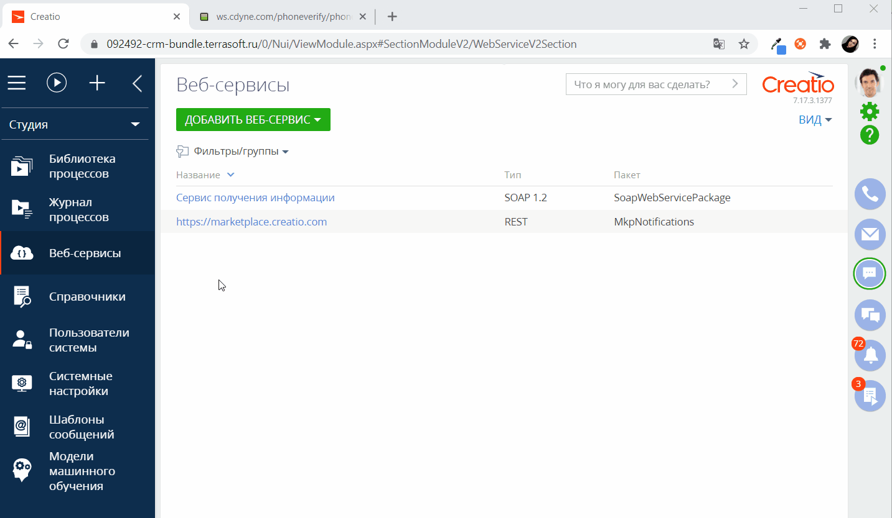
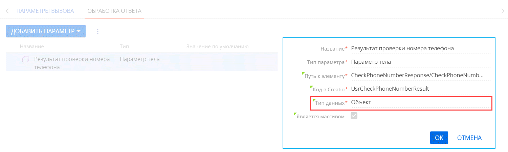
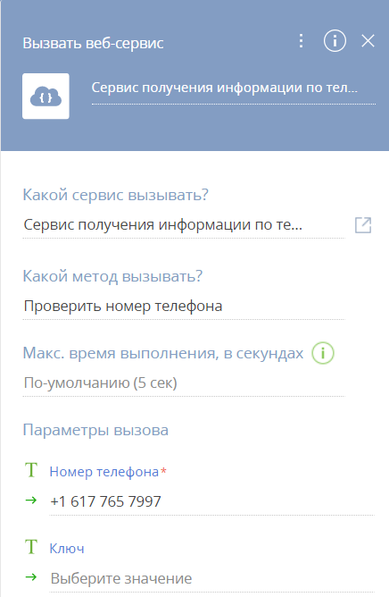

Возможность настройки интеграции с веб-сервисом SOAP доступна для приложений Creatio версии 7.17.2 и выше.
Creatio поддерживает интеграцию с пользовательскими SOAP-сервисами с помощью инструментов low-code. Creatio сгенерирует и отправит запрос веб-сервису, получит ответ и предоставит необходимые данные. Данные, полученные от веб-сервиса, можно использовать для создания или обновления записей в базе данных Creatio, а также для реализации пользовательской бизнес-логики или автоматизации.
Общая последовательность настройки одинакова для всех SOAP-сервисов, детали во многом зависят от специфики веб-сервиса.
Этапы настройки интеграции с веб-сервисом:
- Добавление веб-сервиса и настройка его свойств и методов.
- Настройка аутентификации веб-сервиса (опциональный шаг). Настройка аутентификации идентична для REST и SOAP-сервисов.
- Проверка интеграции с веб-сервисом.
После этого можно использовать интеграцию с веб-сервисом в пользовательских бизнес-процессах. Пример настройки процесса описан в статье Использовать интеграцию с веб-сервисами для автоматического обновления курсов валют.
Creatio позволяет импортировать wsdl-файл или настроить интеграцию вручную.
Автоматическая настройка свойств и методов веб-сервиса
- Перейдите в рабочее место Студия и откройте раздел Веб-сервисы.
- Нажмите Добавить веб-сервис —> SOAP сервис.
- В окне “Быстрая настройка SOAP веб-сервиса” нажмите Выбрать файл или добавьте ссылку на wsdl-файл с описанием веб-сервиса, интеграцию с которым необходимо настроить.
- В окне “Настройка SOAP веб-сервиса” выберите, какой сервис и версию SOAP использовать. Также настройте методы, которые необходимо вызывать, и параметры вызова методов. Нажмите Далее.
- В окне “Настройка SOAP веб-сервиса” выберите необходимые параметры ответов методов. Нажмите Сохранить (Рис. 1).
Рис. 1 — Автоматическая настройка веб-сервиса
Настройка веб-сервиса выполнена. Все свойства и методы на странице сервиса будут заполнены автоматически. Далее переходите к проверке интеграции с SOAP-сервисом.
Ниже приведен альтернативный способ настройки свойств и методов веб-сервиса.
Ручная настройка свойств и методов веб-сервиса
- Перейдите в рабочее место Студия и откройте раздел Веб-сервисы.
- Нажмите Добавить веб-сервис —> SOAP сервис.
- В окне “Быстрая настройка SOAP веб-сервиса” нажмите Пропустить быструю настройку.
- Изучите документацию веб-сервиса. В нашем примере используется следующий код.
- Заполните поля страницы свойств веб-сервиса (Рис. 2).
Поле Комментарий Пример Название Название будет отображаться в поле Какой сервис вызывать? области свойств элемента процесса Вызвать веб-сервис. Сервис получения информации по телефонному номеру Код Используется разработчиками для взаимодействия с веб-сервисом в программном коде Creatio. В данном случае уникальное имя интеграции с веб-сервисом состоит из его названия и префикса “Usr”. UsrPhone VerifyService Пространства имен Необходимо указывать только пространства имен, которые используются для методов и их параметров. Набор пространств имен задается в формате “Префикс пространства имен”:“Пространство имен”, разделенных символом “;” или переводом строки. Если пространство имен только одно, то его можно задать без префикса. Это пространство имен будет применено ко всему запросу. http://ws.cdyne.com/ PhoneVerify/ query URI сервиса Полный адрес вызова веб-сервиса будет состоять из этого URI и настроек, указанных на странице настройки метода.
Используйте такой же протокол (http/https), как и у сайта вашего приложения Creatio.
Если веб-сервис содержится в недоступном для редактирования пакете, то его URI будет доступен для редактирования.http://ws.cdyne.com/ phoneverify/ phoneverify.asmx? WSDL Повторов вызова при ошибках Если ответ от веб-сервиса пришел с кодом ошибки или истек тайм-аут ответа, то запрос будет повторен указанное количество раз. При заполнении этого поля учитывайте тайм-аут ответа, который будет указан для методов веб-сервиса. По умолчанию — 0 Пакет Пакет, в котором будет сохранена данная интеграция с веб-сервисом. В списке отображаются пакеты, которые доступны для изменения текущим пользователем. SoapWeb ServicePackage Рис. 2 — Заполнение страницы свойств веб-сервиса
Настроить вызов метода
Для каждого веб-сервиса необходимо настроить вызов методов. При этом для одного веб-сервиса можно настроить несколько методов.
- На детали Методы страницы настройки интеграции с веб-сервисом при помощи кнопки
 добавьте методы.
добавьте методы. - Изучите документацию веб-сервиса. В нашем примере используется следующий код.
- Заполните свойства метода (Рис. 3).
Поле Комментарий Пример Название Название будет отображаться в поле Какой сервис вызывать? области свойств элемента процесса Вызвать веб-сервис. Проверить номер телефона Код (на английском) Используется разработчиками для взаимодействия с веб-сервисом в программном коде Creatio. В данном случае уникальное имя интеграции с веб-сервисом состоит из его названия и префикса “Usr”. UsrCheck PhoneNumber Код элемента сообщения Название узла XML, который является корневым внутри <soap:Body>. Часто совпадает с названием операции в WSDL. Например, это будет “MessageElementName” в следующем теле запроса: CheckPhoneNumber SOAP Action Для определения данного значения используется документация веб-сервиса.
Например, у веб-сервиса “PhoneVerify” есть “конечная точка” “CheckPhoneNumber”, которая возвращает информацию по номеру телефона.http://ws.cdyne.com/ PhoneVerify/ query/ CheckPhoneNumber Тайм-аут ответа, мс Время ожидания ответа от веб-сервиса. Если после отправки запроса не был получен ответ, либо был получен код ошибки, то по истечении этого времени Creatio повторит запрос (если еще остались неиспользованные попытки повторного вызова). По умолчанию — 5 000 Использовать аутентификацию Использовать аутентификацию для доступа к веб-сервису. Необходимо настроить аутентификацию на детали Аутентификация страницы настройки интеграции с веб-сервисом. Подробнее: Аутентификация веб-сервиса. По умолчанию — false Рис. 3 — Свойства метода веб-сервиса
Настроить параметры запроса
Параметры запроса используются для генерации URL-адреса конечной точки, который Creatio будет использовать при вызове веб-сервиса.
Количество и типы параметров запроса определяются спецификой веб-сервиса. Параметры необходимо добавлять относительно метода.
Доступны следующие типы параметров запроса:
| Параметр тела | Этот тип параметра используется для отправки любых типов данных (включая коллекции) в теле запроса. Подробнее о методе POST запроса читайте в Википедии. |
|---|---|
| Параметр заголовка | Этот тип параметра используется для генерации заголовка запроса. Подробнее об HTTP-заголовках читайте в Википедии. |
| Параметр cookies | Параметры этого типа используются для передачи файлов cookie в запросах к сервису. Например, можно передать полученный ранее cookie для аутентификации. Подробнее о cookie читайте в Википедии. |
Для настройки параметров запроса:
- Изучите документацию веб-сервиса. В нашем примере используется следующий код.
- Добавьте параметры запроса:
- На вкладке Параметры вызова нажмите кнопку Добавить параметр.
- Добавьте параметр “Номер телефона” и заполните его свойства (Рис. 4).
Поле Комментарий Пример Название Название параметра сервиса. Номер телефона Тип параметра Тип параметра сервиса. Параметр тела Путь к элементу Если для параметра используется пространство имен, то оно указывается в формате “Префикс пространства имен”:“Путь к параметру”. PhoneNumber Код в Creatio Используется разработчиками для взаимодействия с веб-сервисом в программном коде Creatio. В данном случае уникальное имя интеграции с веб-сервисом состоит из его названия и префикса “Usr”. Usr PhoneNumber Тип данных Тип данных параметров сервиса. Параметр с вложенными элементами должен иметь тип данных “Объект”. Текст Является массивом Значение параметра-массива нельзя задать в элементе “Вызвать веб-сервис” в дизайнере процессов. Необходимо использовать элемент “Задание-сценарий”. Параметр с типом данных “Объект” обязательно должен быть массивом. По умолчанию признак снят Обязательный При установленном признаке параметр будет обязательным в дизайнере процессов. Признак недоступен для редактирования при выборе значения по умолчанию. По умолчанию признак установлен Значение по умолчанию Значение параметра по умолчанию. Константа Рис. 4 — Настройка параметра “Номер телефона” -
Добавьте параметр “Ключ” и заполните его свойства (Рис. 5).
Поле Комментарий Пример Название Название параметра сервиса. Ключ Тип параметра Тип параметра сервиса. Параметр тела Путь к элементу Если для параметра используется пространство имен, то оно указывается в формате “Префикс пространства имен”:“Путь к параметру”. LicenseKey Код в Creatio Используется разработчиками для взаимодействия с веб-сервисом в программном коде Creatio. В данном случае уникальное имя интеграции с веб-сервисом состоит из его названия и префикса “Usr”. Usr LicenseKey Тип данных Тип данных параметров сервиса. Параметр с вложенными элементами должен иметь тип данных “Объект”. Текст Является массивом Значение параметра-массива нельзя задать в элементе “Вызвать веб-сервис” в дизайнере процессов. Необходимо использовать элемент “Задание-сценарий”. Параметр с типом данных “Объект” обязательно должен быть массивом. По умолчанию признак снят Обязательный При установленном признаке параметр будет обязательным в дизайнере процессов. Признак недоступен для редактирования при выборе значения по умолчанию. По умолчанию признак установлен Значение по умолчанию Значение параметра по умолчанию. Константа Рис. 5 — Настройка параметра “Ключ”
Настроить параметры ответа
Для настройки параметров ответа:
- Изучите документацию веб-сервиса. В нашем примере используется следующий код.
- Добавьте параметры обработки ответа:
- На вкладке Обработка ответа нажмите кнопку Добавить параметр.
- Добавьте параметр “Компания” и заполните его свойства (Рис. 6).
Поле Комментарий Пример Название Название параметра сервиса. Компания Тип параметра Тип параметра сервиса. Параметр тела Путь к элементу Если для параметра используется пространство имен, то оно указывается в формате “Префикс пространства имен”:“Путь к параметру”. CheckPhoneNumberResponse/ CheckPhoneNumberResult/ Company Код в Creatio Используется разработчиками для взаимодействия с веб-сервисом в программном коде Creatio. В данном случае уникальное имя интеграции с веб-сервисом состоит из его названия и префикса “Usr”. Usr Company Тип данных Тип данных параметров сервиса. Параметр с вложенными элементами должен иметь тип данных “Объект”. Текст Является массивом Значение параметра-массива нельзя задать в элементе “Вызвать веб-сервис” в дизайнере процессов. Необходимо использовать элемент “Задание-сценарий”. Параметр с типом данных “Объект” обязательно должен быть массивом. По умолчанию признак снят Значение по умолчанию Значение параметра по умолчанию. Константа Рис. 6 — Настройка параметра “Компания” - Добавьте параметр “Валидно” и заполните его свойства (Рис. 7).
Поле Комментарий Пример Название Название параметра сервиса. Валидно Тип параметра Тип параметра сервиса. Параметр тела Путь к элементу Если для параметра используется пространство имен, то оно указывается в формате “Префикс пространства имен”:“Путь к параметру”. CheckPhoneNumberResponse/ CheckPhoneNumberResult/ Valid Код в Creatio Используется разработчиками для взаимодействия с веб-сервисом в программном коде Creatio. В данном случае уникальное имя интеграции с веб-сервисом состоит из его названия и префикса “Usr”. Usr Valid Тип данных Тип данных параметров сервиса. Параметр с вложенными элементами должен иметь тип данных “Объект”. Логическое Является массивом Значение параметра-массива нельзя задать в элементе “Вызвать веб-сервис” в дизайнере процессов. Необходимо использовать элемент “Задание-сценарий”. Параметр с типом данных “Объект” обязательно должен быть массивом. По умолчанию признак снят Значение по умолчанию Значение параметра по умолчанию. Константа Рис. 7 — Настройка параметра “Валидно”
Нажмите кнопку Сохранить для сохранения настроек.
Настроить параметры запроса и ответа типа “коллекция”
Коллекцией (или массивом) является набор элементов. Creatio может передавать коллекции данных в веб-сервис и обрабатывать его ответы, содержащие коллекции. Если веб-сервис поддерживает получение и/или отправку массивов данных, то параметры типа “коллекция” можно использовать как для вызова веб-сервиса, так и для обработки его ответа.
Типы параметров коллекции:
- Простая коллекция. Любой параметр можно представить в виде коллекции, установив в свойствах параметров признак “Является массивом”. Простые коллекции являются массивами значений одного типа данных. Каждое значение является отдельным элементом коллекции. Например, “1, 2, 3” — это простой массив значений целых чисел, а “Бостон, Нью Йорк, Чикаго” — простой массив текстовых значений.
- Коллекция объекта. Коллекция представляет собой корневой параметр (т. н. объект), который содержит вложенные параметры.
Для настройки коллекции:
- Изучите документацию веб-сервиса. В нашем примере используется следующий код.
- Добавьте метод “CheckPhoneNumbers”. Поля методов описаны на шаге Настроить вызов метода.
-
Настройте параметры запроса. Поля параметров описаны на шаге Настроить параметры запроса.
Обратите внимание, что в соответствии с документацией веб-сервиса параметр запроса “ArrayOfString” — комплексный тип, который состоит из массива элементов “string”. Для настройки параметров запроса, который является коллекцией:
- В поле Тип параметра выберите “Параметр тела”.
- Установите признак Является массивом.
- В поле Название элемента массива укажите “string” (Рис. 8). По умолчанию — “item” (для простых массивов).
Рис. 8 — Настройка параметров запроса
- Изучите документацию веб-сервиса. В нашем примере используется следующий код.
-
Настройте параметры ответа. Поля методов описаны на шаге Настроить параметры ответа.
В поле Тип данных выберите “Объект”. После этого станут доступны вложенные параметры (Рис. 9).
Рис. 9 — Настройка типа данных
Параметры ответа веб-сервиса типа “коллекция” могут использоваться в качестве входящих параметров элемента бизнес-процесса Вызвать веб-сервис. Подробнее: Элемент процесса Вызвать веб-сервис.
Проверка интеграции с SOAP-сервисом
Для дальнейшего использования данных, полученных от сервиса, в пользовательских бизнес-задачах необходимо проверить настройку интеграции. Поскольку веб-сервисы можно вызвать только в рамках бизнес-процесса, для проверки интеграции необходимо создать и запустить тестовый бизнес-процесс.
Чтобы проверить работу интеграции с веб-сервисом, достаточно отобразить значения параметров обработки ответа веб-сервиса на преднастроенной странице.
Для проверки интеграции:
- Откройте дизайнер процессов и создайте процесс с двумя последовательно выполняющимися элементами: Вызвать веб-сервис и Преднастроенная страница (Рис. 10).
Рис. 10 — Процесс проверки работы интеграции с SOAP-сервисом
- Настройте свойства элемента Вызвать веб-сервис, как показано на Рис. 11.
Поле Комментарий Пример Какой сервис вызывать? Выберите веб-сервис, который необходимо вызвать. Сервис получения информации по телефонному номеру Какой метод вызывать? Выберите метод веб-сервиса, который необходимо вызвать. Проверить номер телефона Параметры вызова Параметры веб-сервиса, с которыми необходимо вызвать веб-сервис. Заполняется автоматически после выбора метода. В поле введите значение параметров, которые будут использованы при вызове веб-сервиса. +1 617 765 7997 Рис. 11 — Область свойств элемента Вызвать веб-сервис - В области свойств преднастроенной страницы при помощи кнопки создайте новую преднастроенную страницу. В дизайнере преднастроенной страницы добавьте поля. В нашем примере это текстовые поля “Компания” и “Информация по телефонному номеру”, логическое поле “Валидно” (Рис. 12).
Рис. 12 — Преднастроенная страница
Сохраните страницу.
- В дизайнере процессов, в области свойств преднастроенной страницы настройте передачу значений параметров из элемента Вызвать веб-сервис в поля преднастроенной страницы, которые вы добавили (Рис. 13).
Рис. 13 — Настройка параметров страницы в области свойств элемента Преднастроенная страница
- Сохраните бизнес-процесс.
В результате при запуске процесса откроется преднастроенная страница (Рис. 14), поля которой будут заполнены значениями, полученными в ответе веб-сервиса.
Рис. 14 — Результат выполнения бизнес-процесса
После проверки вы можете использовать интеграцию с веб-сервисом в пользовательских бизнес-процессах. Подробнее данный пример описан в статье Использовать интеграцию с веб-сервисами для автоматического обновления курсов валют.
В зависимости от особенностей веб-сервиса, прежде чем он станет доступным для использования, может потребоваться выполнить процедуру аутентификации. Подробнее: Настроить аутентификацию веб-сервиса.